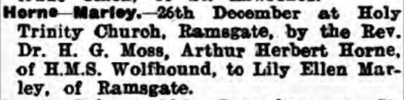
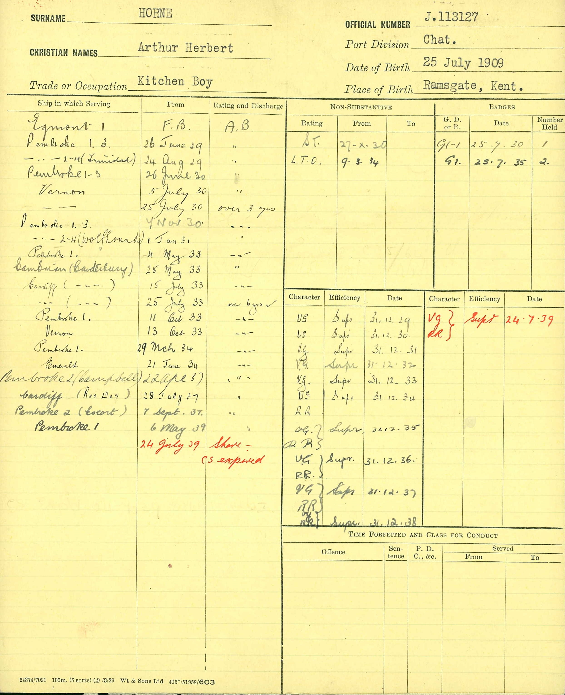
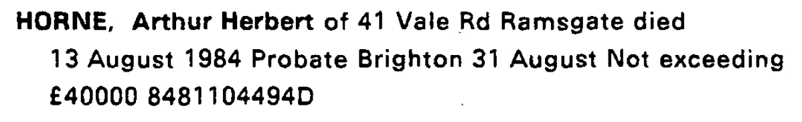
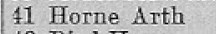
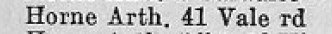
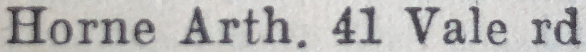
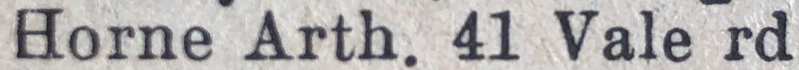
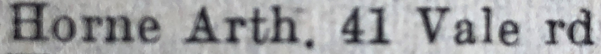
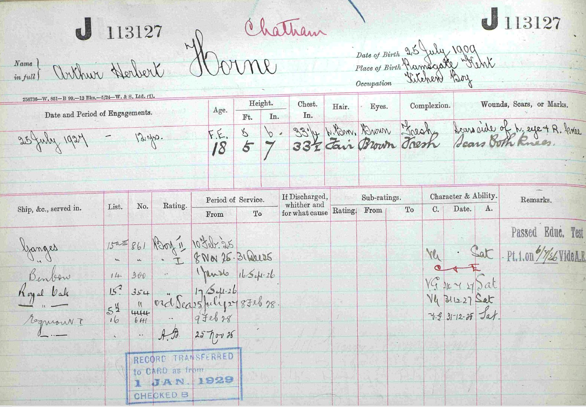
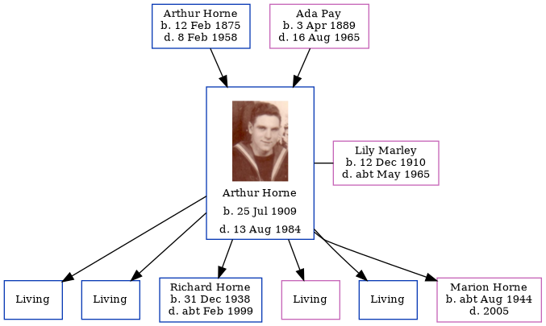

Arthur Herbert Horne 1909 - 1984
[ Home ] | [ Calendar ] | [ Surnames Index ] | [ Family History ]An electrician and the son of Arthur Horne (a smack owner's assistant) and Ada Pay, Arthur Horne, the second cousin twice-removed on the father's side of <a href="I1.html">Nigel Horne</a>, was born in Ramsgate, Kent, England on Jul 25, 1909<span class="citation">1,2</span>, was baptized there at Christ Church on Aug 15, 1909 and also married Lily Marley (with whom he had 6 children: <a href="I1989.html">Arthur Richard</a>, <a href="I1990.html">David Edward</a>, <a href="I1991.html">Richard John</a>, <a href="I1992.html">Dorothy E</a>, <a href="I1993.html">John</a> and <a href="I1994.html">Marion Rose</a>, along with 4 surviving children) there at Holy Trinity Church, on Dec 26, 1932<span class="citation">6</span>.</p><p>Throughout his life, Arthur lived in several places: on 30 Royal Road in Ramsgate on Apr 2, 1911<span class="citation">1</span>; on 12 King Edward Road in Ramsgate on Jun 19, 1921<span class="citation">12</span>; on 47 St Patricks Road in Ramsgate on Sep 29, 1939<span class="citation">2</span>; and on 41 Vale Road in Ramsgate in 1953<span class="citation">9</span>, in 1955<span class="citation">8</span>, in 1963<span class="citation">10</span>, in 1965<span class="citation">7</span>, in 1974<span class="citation">11</span> and in 1984. He served in the navy from Jun 26, 1929 to 1939.<p>He died on Aug 13, 1984 in Thanet, Kent, England<span class="citation">3,4,5</span>.
Parents
- Arthur Albert was born on Feb 12, 1875
- Ada Caroline Eleanor was born on Apr 3, 1889
Children
- Richard John was born on Dec 31, 1938
- Marion Rose was born c. Aug 1944
Citations
- 1911 Census for England & Wales - Findmypast (was age 1 and the son of the head of the household)
- 1939 Register - Findmypast (was the head of the household)
- England & Wales Government Probate Death Index 1858-2019 - Findmypast
- England & Wales, Death Index: 1984-2005 Online publication - Provo, UT, USA: The Generations Network, Inc., 2007.Original data - General Register Office. England and Wales Civil Registration Indexes. London, England: General Register Office. © Crown copyright. Published by permission of the Cont
- England & Wales, National Probate Calendar (Index of Wills and Administrations),1861-1941 Online publication - Provo, UT, USA: Ancestry.com Operations Inc, 2010.Original data - Principal Probate Registry. Calendar of the Grants of Probate and Letters of Administration made in the Probate Registries of the High Court of Justice in England. Londo
- England & Wales marriages 1837-2008 - Findmypast
- 1965 Kelly's Thanet Directory
- 1955 Kelly's Thanet Directory
- 1953 Kelly's Thanet Directory
- 1963 Kelly's Thanet Directory
- 1974 Kelly's Thanet Directory
- 1921 Census Of England & Wales - Findmypast (was age 1 and the son of the head of the household)
Media
Arthur Herbert Horne
Thanet Advertiser 3 Jan 1933

Arthur Herbert Horne - Naval Record 2

Arthur Herbert Horne - probate

1965 Kelly's Thanet Directory

1955 Kelly's Thanet Directory

1953 Kelly's Thanet Directory

1963 Kelly's Thanet Directory

1974 Kelly's Thanet Directory

Arthur Herbert Horne - Naval Record

Kent, Canterbury Archdeaconry baptisms 1538-1912 - GBPRS/CANT/B/96524737
England & Wales births 1837-2006 - BMD/B/1909/3/AZ/000288/177
England & Wales deaths 1837-2007 Transcription - BMD-D-1984-8-74397650
England & Wales marriages 1837-2008 - BMD/M/1932/4/AZ/000571/035
1939 Register - TNA/R39/1768/1768C/014/20
1939 Register Transcription - TNA-R39-1768-1768C-014-25
England & Wales Government Probate Death Index 1858-2019 - GBOR/GOVPROBATE/C/1984-1984/00114142
1911 Census For England & Wales - GBC/1911/RG14/04515/0293/12
Family Tree
Generated by Ged2Site. Last updated on Jul 20, 2025